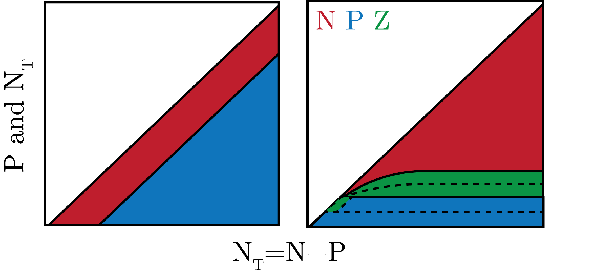
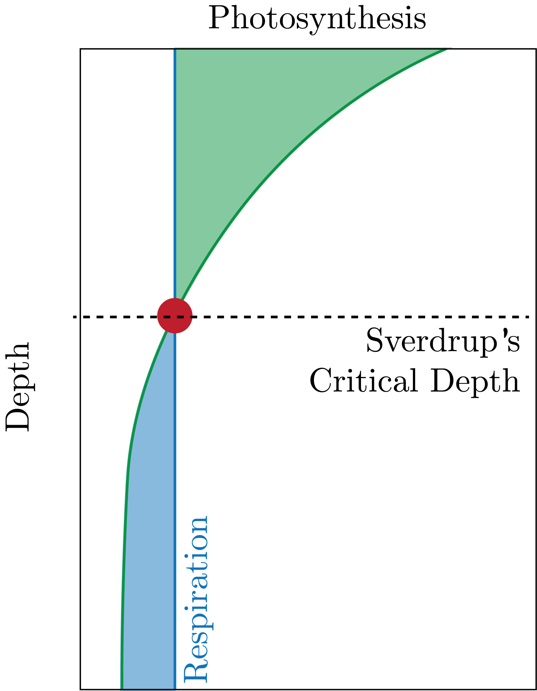
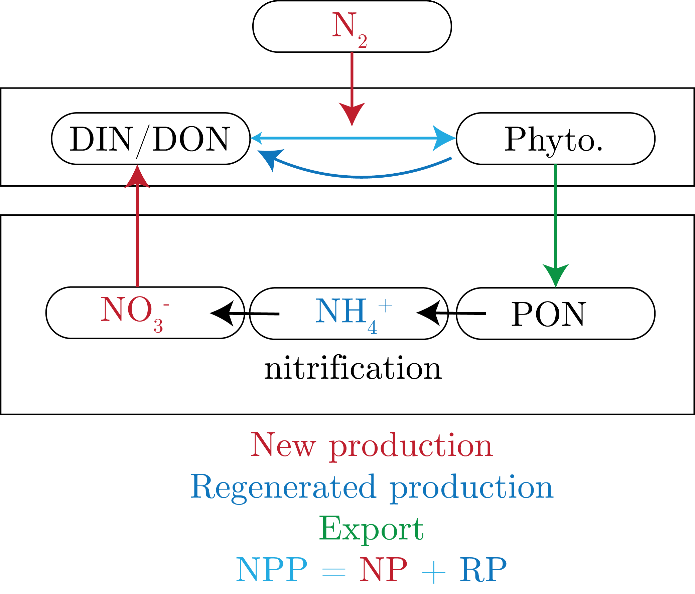

We can write a model of the form:
\begin{equation}
\frac{\textrm{d}P}{\textrm{d}t} = P\cdot\left( v_{\text{max}} \frac{N}{K_N + N} - \lambda_p \right) =_{\text{SS}}0,
\end{equation}
where $\lambda_P$ is the death rate.
We can imagine this is a $\text{growth} - \text{death}$ scenario.
Therefore, we can get:
\begin{equation}
\lambda_P = \frac{v_{\text{max}}N}{K_N + N}.
\end{equation}
We can rearrange to get the nutrient, as a constant:
\begin{equation}
N = \frac{\lambda_PK_N}{v_{\text{max}} - \lambda_P}.
\end{equation}
We define the total nutrient as: $N_T = N + P$.
We note that in this steady-state model, $N$ is a constant, as it is a function of constants.
Therefore, we can think of our system as having some total N, $N_T$, for which there is constant offset by $N$ that gives us $P$.
We can define two regimes here.
The first is when $N$ is very low such that the growth rate from photosynthesis is smaller than the death rate.
Therefore, we would eventually get that $P \to 0$.
However, we we have that $N$ is large enough, then $P$ is supported and we reach a new steady state under the conditions of the system.
If advection and diffusion come into play, then we need to consider more $N$ to make up for this transport.
We can think of this solution, lastly, as the maximum value of $N$ that the system will hold, after which all additional $N$ goes into the production of $P$.
N-P-Z Model: Top Down Limitation
We can also consider the effect of having top down limitation, i.e, zooplankton eat both $N$ and $P$.
Therefore, this removes the total amount of $N$ within the system.
We present all of this in Fig. 1.
We can continue this to have multiple size classes, which is shown for two size classes for $P$ and $Z$ in the dashed lines in the right panel of Fig. 1.

Fig. 1: Both top-down (right) and bottom-up (left) limitation models discussed thus far. The dashed lines in the TD control represent two sizes classes.
Sverdrup's Critical Depth Hypothesis
Sverdrup posits that the critical MLD is that where the integration of net photosynthesis and net respiration are equation, the compensation depth we discussed previously.
In this case, we could get that there is enough nutrients from the deep MLD and enough light to have a bloom, which is why we have lots of primary productivity in regions of deep MLD (North Atlantic).

Fig. 2: Sverdup's critical depth hypothesis.
Regional Distributions of Export
If you look at POC export maps and NPP maps, we see that there is high export in the high latitudes, at the equator (equatorial upwelling), and on the coasts (coastal upwelling).
These are places that are known for high productivity, which is composed of larger cells and animals, i.e., not the diffusive limit.
Larger cells sink faster, therefore there is a correlation between high PP and high POC export.
We can also look at inorganic solids – such as CaCO$_3$ and opal – which come from coccolithophores and forams and diatoms.
We mostly see the diatoms in the Southern Ocean and the Sub-arctic North Pacific, as there is high silica concentrations here.
Silica is heavy, therefore there is large export (ballast).
We see CaCO$_3$ export dominated in the other regions of high productivity.
In areas of low productivity, we have these regions dominated by bacteria (i.e., small cells).
Nitrogen Cycle
We have three major nitrogen sources, in order of preference given oxidation state:
DON
NH$_4^+$ (Ammonium)
NO$_3^-$ (Nitrate)
N$_2$
All of these lead to biomass assimilation.
We can also consider dissimilation by considering nitrification:
\begin{equation}
16 \text{NH}_4^+ + 24 \text{O}_2 \to 16 \text{NO}_2^- + 32 \text{H}^+ + 16 \text{H}_2\text{O}.
\end{equation}
Next, we have nitrite oxidation:
\begin{equation}
16 \text{NO}_2^- + 8 \text{O}_2 \to 16 \text{NO}_3^-.
\end{equation}
We can relate all of this to our well-known respiration equation:
\begin{equation}
\left( \text{CH}_2\text{O} \right)_{106}\left( \text{NH}_3 \right) _{16}\text{H}_3\text{PO}_4 + 106\text{O}_2 \to 106 \text{CO}_2 + 16 \text{NH}_3 + f(\text{PO}_4^{3-}, \cdots)
\end{equation}
Therefore, there is competition for the ammonium, for which the phytoplankton will win.
Next, we can consider nitrogen gas diazotrophy, or nitrogen fixation:
\begin{equation}
\text{N}_2 + 8\text{H}^+ + 8\text{e}^- + 16\text{ATP} \to 2\text{NH}_3 + \text{H}_2 + 16(\text{ADP} + \text{P}_i),
\end{equation}
in which the triply bond of N$_2$ is cleaved off and to form ammonia.
In these compounds, we see that they are enriched in N compared to C and P of Redfield, i.e. 150:25:1.
Nitrogenase takes a lot of energy in order to cleave the N off of N$_2$, so it is not preferable to go to this process, and also requires 38 Fe and is inhibited by O$_2$.
As the ocean is well oxygenated, this can become a problem.
We often see nitrogen fixation in regions of high dust deposition, such as the North Atlantic, which is Fe rich.
Instead, these cells will want to use Nitrate and Ammonium first as this processes is clearly prohibitive.
We can therefore develop a model using nitrate as a tracer for export, as at steady state the upwelling from nitrification nitrate has to equal the export from production.
We present this in Fig. 3.

Fig. 3: The N cycle in the ocean.
We define a few terms here:
New production = NO$_3^-$ + N$_2$ (uptake)
Regenerate production = NH$_4^+$ (uptake)
Total production = NP + RP
NPP = TP at a theoretical steady state, however this is not always the case.
We corresponding define:
\begin{align}
\text{e-ratio } &= \frac{\text{Export}}{\text{NPP}}, \\
\text{f-ratio } &= \frac{\text{NP}}{\text{TP}}.
\end{align}
Therefore, we should have that $\text{e-ratio}=\text{f-ratio}$.
There is an assumption here that all nitrification is happening in the deep ocean. If there is any in the surface, then we have to decouple the export from the New Production.
If there is any nitrification in the surface, then we would get a lower $\text{f-ratio}$.
Regenerated production is a combination of things:
Leakage
Exudation
Cell death (by viruses)
Literally sloppy eating
where 2-50% of RP is from leakage.
We can define all of this as the microbial loop, which describes the production equilibrium of POC into DOC.
There are many ways that this happens (which is a two-way street).
We can see a range in the -ratios from above, ranging from oligotrophic ranges of 15% to eutrophic ranges of 40%.